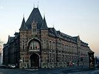

> nieuwsbrief
> 2e trimester
2012
| Bijdragen over: | Tip |
Als verduidelijkt in ons vorig nummer zagen
we
ons verplicht de basisbijdrage op te trekken tot 29 €. Vanaf 35
€ wordt
u als steunend lid geboekt. Deze “indexering” is, gezien het vlot
verloop van
de ledenher-nieuwing, in ruime mate als noodzakelijk begrepen en
aanvaard.
Waarvoor hartelijk dank.
In de bijdrage is als vanouds het
abonnement op
onze Nieuwsbrief Zannekin en op
het zopas verschenen – al 34e – Jaarboek
de Nederlanden ‘extra muros’ begrepen.
Enkel voor wie totnogtoe verstek liet gaan sluiten we bijliggend
andermaal
een betaalformulier in.
Laattijdig
verschijnen
De papieren versie van dit nummer van onze Zannekin-Nieuwsbrief komt er eerst aan
maand na de gebruikelijke verschijningsdatum. Oorzaak daarvan is dat
ook onze
Zanne-kin-studie-uitstap dit keer niet in mei valt maar eerst midden
juni.
Vanaf het derde kwartaal wordt de driemaandelijkse periodiciteit
hersteld.
Zannekin-activiteiten
in
2012
Studiedag te
Luik op zaterdag 16 juni (zie verder in
dit nummer).
Ontmoetingsdag op
zaterdag 29 september te Belle in
Frans-Vlaanderen.
De
streektaal van het
Erkelenzerland en omgeving
De “vurige stede” Luik
onderging de jongste
decennia een metamorfose en kan heden ten dage terecht pronken met een
tal van
historische blikvangers.
Onze
uitstap kreeg volgend
stramien:
11.30 uur: Verwelkoming met
koffie. in de Taverne de l'Ubivers -
rue des Guillemins 116, 4000 Luik/Liège (tel. (0)-4 253 24 24),
rechtover het NMBS-station Liège-Guillemins.
11.30 uur: Lezingen door Hendrik
Steeger en
12.30 uur: Middagmaal met
Salade Liégoise (groene
bonen met spekreepjes in zurige roomsaus en gebloemde aardappelen) en
koffie of
thee.
13.30 uur: Busrit (lijnbus)
naar de Feronstrée met
rondleiding door de stadskern (het Prinsbisschoppelijk Paleis, het
Perron, het
Huis van Ansembourg). Geleid bezoek o.l.v.
16.30
uur: Café Liégois
in de Taverne de l'Univers -
rue des Guillemins 116, Liège.
Vanaf 17.00 uur: afsluit.
Geschiedenis
 Luik door Blaeu
Luik door Blaeu
Luik
(Frans:
Liège, Duits:
Lüttich; Waals:
Lîdje) is de hoofdstad
van de Belgische
provincie Luik. De
stad is gelegen aan de Maas,
ongeveer
Halverwege
de 20e eeuw
was Luik het centrum van de mijnbouw en staalindustrie, die Wallonië
tot
welvaart brachten. De economische problemen, die later in de eeuw het
gevolg
waren van de vermindering van het belang van mijnbouw en
staalindustrie, hebben
hun effect op de omgeving van Luik niet gemist.
Luik
telt ruim 190.000 inwoners en is daardoor naar inwonertal de op drie na
grootste stad van België is en waarvan ongeveer 30.000 inwoners een
buitenlandse nationaliteit bezitten. De Universiteit van Luik (Université de Liège,
afkorting ULg) werd
gesticht ten tijde van het Verenigd Koninkrijk
der Nederlanden
onder Willem I
en officieel ingehuldigd in 1817.
De
bijnaam van de stad is
Vele
eeuwen lang, tot 1795, werd Luik geregeerd door prins-bisschoppen.
De
geschiedenis van Luik wordt gekenmerkt door talloze conflicten tussen
de stad
Luik en haar bisschoppen, waarbij het er soms heftig aan toe ging. De
stad
kreeg muren om zich te beschermen en bovenop een heuvel kreeg Luik in
de loop
der tijd een citadel
die verschillende keren herbouwd is.
In
1468 werd in het kader van een dergelijke machtsstrijd de stad
"ge-tuchtigd"
door de Bourgondische hertog Karel de
Stoute. Zijn soldaten heb-ben zich buitengewoon misdragen in
de
stad: ongeveer een kwart van de toen 20.000 inwoners verloor hierbij
het leven.
Toen
de hertogen van Bourgondië – en later de Habsburgse koningen – allengs
de hele Nederlanden
onder hun gezag verenigden,
bleef het prins-bisdom Luik als onafhankelijke staat daarbuiten.
Tijdens
de Tachtigjarige Oorlog
probeerden de
bisschoppen van Luik neutraal te blijven tussen de twee strijdende
partijen. De
bisschopsstad zelf werd de Beeldenstorm
bespaard, maar deze bereikte wel
onder meer Hasselt
(19
Luik
had zich ontwikkeld tot een belangrijk centrum van metaalindustrie
en ook van de wapenindustrie. In 1794 hebben burgers van de stad Luik,
die
verbolgen waren over het autoritaire optreden van hun bisschop, zodra
de stad
door de Franse revolutionaire legers was veroverd, de gotische Sint-Lambertuskathedraal
gesloopt. De lege plaats daarvan vormt de huidige Place Saint-Lambert.
Onder
het huidige plein zijn na grondige archeolo-gische opgravingen de
fundamenten van
de kathedraal en een Romeinse villa blootgelegd.
In
de 19e eeuw werd de Sint-Pauluskerk verheven tot Sint-Pauluskathedraal.
In 1887 werd
besloten tot de
oprichting van de forten rond Luik.
De eerste
veldslag van de Eerste Wereldoorlog speelde zich van 5 tot
en met 15
augustus 1914 af in de fortengordel rondom Luik. De stad lag op de
Duitse
aanvalsroute door België naar Frankrijk.
Weinigen verwachtten dat België tegenover de
aanzienlijke Duitse militaire overmacht weerstand zou kunnen bieden, en
om die
reden trok het taaie verzet van de Luikse forten wereldwijde aandacht.
De Engelse
krant The Times
schreef: "België heeft zich onsterfelijke roem verworven door het
geloof
in de onoverwinnelijkheid van de Duitse legers te verpletteren."
Grand
Curtius is een museum in
de Belgische
stad Luik.

Een
perroen
(Frans: perron) is een
hardstenen zuil
met daarop een bol in de vorm van een pijnappel
en een kruis.
Perroens
zijn te vinden in plaatsen die behoorden tot het vroegere Prins-bisdom
Luik, vooral in de zogenaamde Goede Steden
(of Bonnes Villes).
In
de stad Luik
markeerde het perron de plaats waar wetten en verordeningen
werden
afgeroepen. Op den duur symboliseerde het perroen autonomie en
zelfstan-digheid,
eerst van de bisschop en later van de stad. In de 14e eeuw mochten alle
Bonnes Villes
van het prins-bisdom een perroen oprichten. Hoei had
al voor 1235 een
perroen. Niet alle plaatsen met perroens zijn Bonnes Villes.
Theux
bijvoorbeeld werd pas later door het prinsbisdom
ingelijfd. Stavelot
kreeg een perroen omdat de prins-bisschop
van Luik ook soms abt-prins van Stavelot-Malmédy
was. Ook Maastricht
heeft een perroen, hoewel deze tweeherige stad
nooit tot de Goede Steden
van het Prins-bisdom behoorde.
In
de 12e eeuw werd het perroen al afgebeeld op munten van de Luikse
prins-bisschop
Henri de Leez (ook: van Leyen). In de 14e eeuw werd het symbool
opgenomen in
het wapen van de stad. Nadat Karel de
Stoute Luik in 1467 had verslagen, liet hij het perroen
afbreken en
overbrengen naar Brugge.
Na de dood van Karel in 1477 werd het Luikse perroen heropgericht.
Deelname
Inschrijven voor deze dag gebeurt door
schriftelijke
aanmelding aan het secretariaatsadres: Paddevijverstraat 2, B.8900
Ieper of via
e-post op het adres: maurits.cailliau@skynet.be tot uiterlijk 6 juni. De aanmelding wordt
eerst definitief na boeking van de deelnemersbijdrage van 40 €/persoon
(leden); niet-leden 45 € op een
van de Zannekin-rekeningen (zie link administratie)..
Bij inschrijving dienen onderstaande
gegevens vermeld
te worden:
Aanmelding
Studie-uitstap
Zannekin
te Luik op
12 juni 2012
Ondergetekende
Naam: ……………………………………………………………………….
Straat en huisnummer: ………………………………………………………
Postcode en woonplaats:
…………………………………….………………
Telefoonnummer: ……………………………………………………………
Aantal personen: ………………………………….………………………….
schrijft in voor de Zannekin-Studie-uitstap te
Luik op zaterdag 12 juni 2012.
Datum en handtekening……………………………………………………
Jaarboek De Nederlanden ‘extra muros’ 34
Als steeds houden wij er aan het jaar-boek
in te leiden met de klassieke
tekst waarin uiteengezet wordt waar het de Vereniging/Stichting Zannekin uitein-delijk om te
doen is, en
in welk per-spectief wij ook ons jaarboek plaatsen.
De drie eerste bijdragen hebben dit keer
betrekking op de Franse
Nederlanden. Voor
Drie eeuwen
Nederlandse
Letter-kunde in Noord-Frankrijk sloegen
Daarop volgt, eveneens van de hand van
De al vernoemde
Aansluitend besteedt
Bij de daaropvolgende trits bijdragen
belanden we over de huidige
oostgrens. Met
Onder het motto De
(kunst-)geschiedenis van Keulen vanuit Nederlands perspectief neemt
Afsluitend volgen ook nog de Kroniekbijdragen
en boekbesprekingen, waarvan Marten
Heida andermaal het
leeuwendeel voor zijn rekening nam.
_______________________
N.a.v. Jaarboek De Nederlanden
‘extra muros’ 34 (2012). 208 pp., ill., ISBN 9789071326318. Ledenprijs 29 €
(verzendkosten inclusief); niet-leden 34 € + 3 € verzendkosten.
Bestelling via
overschrijving op rekening IBAN: BE13 4648 2202 5319 – BIC: KREDBEBB
t.n.v. Vereniging/Stichting
Zannekin, Paddevijverstraat 2, B. 8900 Ieper.
Jean-Marie Gantois, de Leider van het
Vlaams Verbond
van Frankrijk, kon het zo schoon zeggen: "Voor onze ogen zien wij de
geleidelijke teloorgang van de Nederlandse spraak in de buitenwijken
van
Sint-Omaars. Nog om-streeks 1850 spraken de bewoners van Rumingem,
Sperleke,
Aan Jean-Marie Gantois komt de onmetelijke
verdienste
toe dat hij zijn lezers en volgelingen diets heeft gemaakt dat taal en
volk
niet samenvallen. Hij heeft komaf gemaakt met de oude slogan ‘De taal
is gans
het volk.’ Zulks is niet juist. De bewoners van Bonen, Atrecht,
Kamerijk, Valencijn,
Avenne aan de Helpe en Malbode zijn Nederlanders evenals zij van
Maastricht,
Nijmegen of Groningen.
Johan van der Meulen
“Ik heb mijn diploma Waals behaald”
Uit een
vraaggesprek met André Vanackere
Streuvels
en
Claus
Wanneer André ons binnenin verwelkomt,
komen we
terecht in een ‘gezellige wanorde’ met overal boeken. En dat blijkt nog
maar
een begin. Een aantal uren later troont hij ons mee naar zijn
boekenkelder. We
geloven onze ogen niet: misschien wel duizenden boeken staan er in
rekken of
liggen op stapels, van Streuvels tot Djoos Utendoale, van Timmermans
tot Claus…
En dan zijn 230 woordenboeken! “Ik heb Italiaans en Spaans geleerd en
Lëtzeburgisch (Luxemburgs). Ik heb ook het Frans-Vlaams Woordenboek van
Hij haalt het stamboomboek van de familie
Van Ackere
boven: “Wij behoren tot de Gullegemse tak, net zoals de familie van
minister
Steven Vanackere. Ook Hugo Verriest was familie, zijn moeder was een
Vanackere.” In de woonkamer prijkt een groot schilderij met het
familiewapenschild (waarop drie merels ofte meerlaans).
Kasteelhoeve
Als West-Vlamingen in Wallonië verzeilen,
heeft dat
nogal vaak met de boerenstiel te maken en dat is bij de Vanackers niet
anders
geweest. We schrijven 1954 wanneer twee broers van Kachtem naar het
Naamse
trekken.
Wij wippen even binnen bij broer Arthur,
die het
vervolg vertelt van het familieverhaal. “Ik kwam naar hier met m’n
oudste broer
Hendrik. Ik wilde uit ‘de Vlaanders’ weg omdat ik niet graag in het
vlas
werkte. Maar Hendrik kon hier niet aarden en na drie dagen was hij weer
weg.
Hij werd afgelost door broer Frans, maar die is nadien naar Henegouwen
getrokken. Ik bleef achter en alleen was dat niet te doen. Zo besloten
mijn
ouders ook over te komen. Ik ben dan getrouwd en na verloop van tijd
konden we
de kasteelhoeve kopen. We hebben het wel zwaar gehad…”
Vandaag is Bossimé deels boerderij, deels
vakantiehuis. En onlangs heeft kleinzoon Ludovic Vanackere er zijn
gastronomisch restaurant geopend: Atelier
Bossimé.
Late
roeping
Intussen vertelt André hoe hij zelf – ‘niet
boer’ –
ook in Namen belandde, als de boekenwurm van de familie. “Ik wilde
studeren en
trok naar het college van Izegem, in de Latijnse humaniora. Maar ik had
een
flauw geheugen. Op de koop toe werd ik ziek en moest ik mijn studies
stopzetten. Mijn broer zat ondertussen in Wallonië, in ben bij hem gaan
inwonen
tot hij trouwde. Toen ben ik bij de late roepingen ingetreden bij Don
Bosco te
Kortrijk. Ook dat ging niet en zo ben ik dan rond 1961 hier in het
Walenland
melkboer geworden. Ik verkocht ook kaas en aardappelen. Op mijn
camionette
stond ’Lacia, canades Vanackere’. ‘Lacia’
is Waals voor melk, ‘canadas’ zijn
aardappelen. Als enige handelaar met een Waals opschrift had ik
onmiddellijk
succes.”
Na zo’n twintig jaar moest André zijn
melkronde
stopzetten: “Last van de stofmijt.” Van dan afwerd hij eerst echt een
boekenwurm. Alle mogelijke onderwerpen interesseren hem! Om zijn
leerhonger te
stillen trekt hij nu nog twee keer per week naar school: Latijn,
Grieks,
Duits…(…)
______________________
Bron:
Krant van
West-Vlaanderen, 15 april
2011.
Chiroux en Grignoux in het prinsbisdom Luik (XVIIde eeuw)
Willy Alenus,
Oostende
Het gaat hier om spotnamen (in
het Luikse dialect) voor twee politieke ‘factions’ (partijen) in het
17e-eeuwse
prinsbisdom Luik. De Chiroux (= zwaluwen), wier leden doorgaans tot de
gegoede
standen behoorden- adel, hoge geestelijkheid en burgerij, gilden en
ambachten-
zij steunden op de prins-bisschop, op de Habsburgers en op de keizer
van het
Rooms- Duitse Rijk, toentertijd Ferdinand II (1578–1637) en Ferdinand
III
(1608-1657). Het keizerrijk was een confederatie van vorstendommen en
heerlijkheden.
Johannes III Alenus
(1593–1644),
scepene ende secretaris van het
Loons-Luikse Herk-de- Stad, de jongste zoon van Henricus Alenus en
Cecilia
Clingers, was een van de kopstukken of misschien zelfs HET kopstuk van
de
Oostenrijks/Beierse partij.
De Grignoux (les grincheux,
de kniesoren), vormden een democratische groep die
naar meer en
vollediger zelfbestuur van de goede steden streefde, zochten en vonden
steun
bij het anti-Habsburgse Frankrijk en ook, vanaf 1600, bij de
(protestantse)
Republiek der Verenigde Nederlanden, een confederatie van provinciën
rond het graafschap Holland.
De partijtwisten bereikten een
hoogtepunt in 1628 bij het ongedaan maken van het democratische
kiesstelsel van
1603. De Herkse burgemeesterssteen (Alenus-Hermans), dateert niet
toevallig van
1629, d.i. onder andere het jaar van het Restitutie- Edict. Alenus was
toen ook
nog en voorzeker al sinds 1623, het jaar van ’s Keizers
troonsbestijging,
raadsheer van de Paltskeurvorst, hertog Maximiliaan I van Beieren, dit
is ook
de stichter-chef van de Katholieke Liga (1609) en de broer van de over
het
prinsbisdom Luik regerende prins-bisschop Ferdinand van Beieren.
In 1646 kwamen, met Franse
steun, de Grignoux weer aan de macht. Ondertussen waren zij reeds, in
het
Loons-Luikse Herk-de-Stad, erin geslaagd Johannes III Alenus, op 18
augustus
1644, alsnog aan de dijk te zetten, als scepene
ende secretaris Oppidi Herckensis.
Diezelfde dag dicteerde hij
zijn testament. Hij stierf op 20 augustus
Op 17 november 1670, bij de scheydinghe ende deylinghe van de
nalatenschap van zijn weduwe, geboren Joffrau
Margriet Bolgry, d.i. 26 jaar na zijn dood, blijkt dat Alenus op 18
augustus
1644, met zijn gekende titels werd aangesproken, waaronder de hier
vernoemde.
Mede als gevolg van het in
werking treden van de vrede van Münster (1648) viel de Franse steun aan
de Grignoux
weg en in 1649 kwam d.m.v. een Beierse, gewapende interventie de
restauratie
van prins-bisschop Ferdinand tot stand, - dit zijn de “Beieren” die
Alenus zijn
levenlange trouw heeft gediend. En die trouw misschien met zijn leven
heeft
betaald.
Er volgde toen, met ingang van
1649, tot grote schade en schande van de Grignoux, een keiharde
repressie en
het in werking treden van een nieuw kiesstelsel, waardoor de politieke
invloed
van de gilden, c.q. de ambachten werd uitgeschakeld.
In die politieke
tegenstellingen moet o.i. de reden worden gezocht van de gloeiende
ruzie
(1628?) tussen Wendelinus en Alenus en hoewel die ruzie, in 1644,
kennelijk al
lang was bijgelegd, kan ook hier de reden worden gezocht waarom
Wendelinus
nooit is teruggekeerd naar zijn geboortestad, om er te sterven en er
begraven
te worden.
Maar dat prins-bisschop
Ferdinand van Beieren, in 1644, zijn "cher et aymé Jean Alenus" in de
steek zou hebben gelaten, dat klopt dus ook niet. Ferdinand was
indertijd
(tijdelijk) niet machtig genoeg om zich tegen de vi
 De toegang tot
l'ancien
hôpital de Bavière
Willy
Alenus
Herk-de-Stad, onder het Ancien Régime Wuestherck genaamd,
was een van de
10 (tien) “goede steden) van het graafschap Loon. Op het grondgebied
van het
graafschap Loon, lagen ook nog twee Luikse steden (Sint-Truiden en
Tongeren) en
een, - alhoewel één en onverdeeld, half Brabants, half Luikse stad,
Maastricht.
Met ingang van 1366 (militaire verovering van het
graafschap Loon door
het prinsbisdom Luik), tot 1795 fungeerden en functioneerden de twee
vorstendommen
als een “Doppelfürstentum”, wat zij in feite en in rechte ook waren.
Geen van
beide vorstendommen maakten ooit deel uit van de “Nederlanden”, maar de
17
provinciën, vooral het hertogdom Brabant, waren wel eigenaar van heel
wat
heerlijkheden op Loons-Luiks grondgebied, met als voornaamste
“eilandje” half-
Maastricht.
Toch voelden Lonenaren en Luikenaren zich zeer nauw
betrokken bij de
opstand van de gezamenlijke Nederlanden (1558-1568-1648). De twee
kopstukken
van de “Opstand” (“Las guerras de los paises bajos”), waren trouwens
Zuid-Nederlanders. Willem van Oranje, de Zwijger, zou vandaag een
Franstalige
Brusselaar worden genoemd. En de veroveraar van het eerste stukje vaste
grond
in Holland, het eiland Voorne en Putten, was niemand minder dan de
Loons-Luikse
heer van Lummen (vandaag B. Limburg), Willem II van der Marck- van
Arenberg
(1542-1578), bijgenaamd “Lumey”.
Vandaag, uitgerekend op koninginne-dag, zal haast niemand
zich de ware
geschiedenis van het gezamenlijk verleden van de “lage landen bi der
see”, met
inbegrip van de Nederlanden ‘Extra Muros’, alsnog herinneren. Schade.
Onder de
destijds
veel voorkomende ABC-formule bracht
Cursief lezend
krijgt
men al meteen een veelal ludiek en steeds inspirerend antwoord op
vragen als:
Was d’artagnan
een held of een moordenaar?
Hoe bijen de Franse vi
Wat is de c-factor?
Zijn de drie maagden van Kaaster
van
heidense oorsprong?
Hoe komt het dat
de eksters in
Frans-Vlaanderen Vlaams spreken?
Waarom ik als
zogenaamde Fransman niet schrik van de kreet franse ratten rolt uw
matten?
Waarom is er geld voor
cultuur nodig?
Wat ondekte hoffmann
von Fallersleben in Frans-Vlaanderen?
Wat is een jakobijn?
Was Ogier van
Busbeke slachtoffer van kapitalisten?
En zo gaat het
verder, met de l
van leuze, de m
van meertaligheid,
de n
van Noordzeekust, De o van op het Antwerps
‘schoon
verdiep’, de p
van Prins van Oranje, de q van Quickborn, de r van
rattachisme, de s
van straatnamen, de t
van Toerisme, de u
van Usje…, de v
van Vlaams, de w
van Waalse kerk, de x
van Xanten, de y
van Yourcenar, om te eindigen met de z
van ‘Zijt gij…’
Na Wintertijd in
Frans-Vlaanderen en Een erfenis
zonder testament (beide bekroond met de ‘Ferdinand Snellaertprijs’
2010),
is dit het derde al even stijlvol uitgegeven bundeltje van de van
oorsprong
Frans-Vlaming Wido Bourel.
Een
breviertje als het ware dat, binnen de context van de Nederlanden,
handelt over
vreemde of bezienswaardige plekken en landschappen, merkwaardige feiten
en
gewoonten, vermaarde maar vaak ook vergeten mensen. Aanbevolen!
__________________
N.a.v.
Marten Heida
Nogmaals Guido de Brès
Allereerst refereer ik aan een
gebeurtenis uit 2007. Een wereldschokkende was het bepaald niet; velen
zullen
haar niet eens opgemerkt hebben. Toch kan ze voor de bijstelling van
het
geschiedenisbeeld met betrekking tot de 16e eeuw van groot belang zijn.
Ik doel
op de in mei 2007 opgerichte “Stichting Heruitgave Werken Guido de
Brès”. Deze
stichting wil een ereschuld inlossen en wel in de vorm van een
volledige
uitgave van wat De Brès aan geschriften heeft nagelaten.
De voorzitter van deze
stichting – dr. P. Korteweg – heeft zich tot taak gesteld een biografie
over De
Brès te schrijven. De laatste Nederlandstalige biografie was van de
hand van
L.A. van Langeraad en dateerde uit 1882 (herdrukt in 1997). Voor het
Franse
taalgebied beschikte men over een studie uit 1960 van de Brusselaar
Emile M.
Braekman. De grote verdienste ervan is het gedegen archiefonderzoek dat
er aan
ten grondslag ligt.
Dank zij de welwillende
medewerking van de kerkenraad van de gemeente waaraan hij als predikant
verbonden is, heeft Korteweg dit deel van zijn taak in 2010 kunnen
afronden.
Hij heeft gekozen voor een geheel eigen opzet. De verhaallijn doet – om
het zo
uit te drukken – dienst als de schering en als inslag fungeren de
deelstudies
die gewijd zijn aan de publicaties en stellingdames. Al met al is het
een
evenwichtig geheel geworden al doet het taalkleed hier en daar wel wat
ouderwets aan. Ook is de schrijver niet altijd even goed op de hoogte
van de
topografie van het Vlaamse landsgedeelte van België getuige de
plaatsnaamaanduiding Saint-Trond in plaats van Sint-Truiden. Maar deze
lapsus
is voor mij geen reden deze studie niet aan te bevelen. De gegevens
zijn: Dr.
P. Korteweg, Guido de Brès. Uitgever:
Gebr. Koster, Barneveld. ISBN 978 90 5551 595 0, 302 pp., 27,90 €.
In 2017 zal op wereldwijde
schaal de Reformatie van 1517 herdacht worden. In dat kader is men
inmiddels
gestart met het Refo 500-project. Een
belangrijk onderdeel daarvan is het publiceren van biografieën over
personen
uit de begintijd zoals Luther, Calvijn en Melachton. In deze reeks is
ook
plaats ingeruimd voor Guido de Brès.
Soms komt de geschiedenis heel
dichtbij. Die ervaring had ik bij het lezen van de passages waarin
beschreven
wordt op welke wijze in Valencijn vader en zoon Herlin om het leven
gebracht
werden. In gedachten stond ik toen in de hal van het door dominee
Gerrit Herlyn
bewoonde huis in de Oostfriese stad Leer. Op woensdag 30 juli 1986 was
ik bij
hem op bezoek. Direct na binnenkomst nam hij me mee naar de trapopgang
en
vestigde mijn aandacht op de daar hangende tekening van een
terechtstelling. De
plaats van uitvoering was de Grote Markt van Valencijn; de
terechtgestelden
waren vader en zoon Herlin. Na deze gerechtelijke moord was er voor de
achterblijvende familieleden geen plaats meer in deze toen Nederlandse
stad. Ze
weken uit naar het noorden om uiteindelijk terecht te komen in
Oost-Friesland.
Marten Heida
Prins Willem
Alexanderpark
53
NL 3905 CB
Veenendaalt
Zeekantig
Vlaanderen rouwde begin 2012
tweemaal omdat twee Vlaamse Bewegers niet meer onder ons kunnen
vertoeven. Twee
trotse West-Vlamingen en Heel-Nederlanders gingen heen. Raf Seys in
februari en
Jan Olsen in maart.
Beide
waren aparte figuren, die elk op hun
manier de Vlaamse Beweging kleurden. Diezelfde Vlaamse Beweging had en
heeft
nog deels de reputatie eerder conservatief gekleurd te zijn.
Van
Raf Seys was bekend dat hij het
vrijdenkend én ruimdenkend liberalisme aankleefde. Jan Olsen zag heil
in het
sociaalflamingantisme.
Beide koppige West-Vlamingen waren
overtuigde
Heel-Nederlanders met een grote liefde voor Frans-Vlaanderen.
De
Peenebeek zweeg even maar kabbelt verder:
Heemkundige Raf Seys
uit Koekelare overleed
83 jaar oud
Raf was een van stuwende krachten achter de
Vereniging van West-Vlaamse Schrijvers en ook een bekend heemkundige in West-Vlaanderen. Ook behoorde hij tot die
West-Vlamingen
die in 1963 de Orde van Manneke uit de
Mane nieuw leven inblies. Hij lag mede aan de basis van het Guido
Gezellegenootschap. Hij raakte tevens bekend met twee publicaties over Käthe Kollwitz in Vlaanderen, die
vertaald werden in het Duits, het Engels, het Russisch en het Noors.
Raf Seys was
getrouwd met de in 2003 overleden Astrid Provoost, een ver familielid
van
schrijver dezes. Zijn huis en al zijn bezittingen laat hij na aan de
gemeente
Koekelare, op voorwaarde dat de gemeente jaarlijks een ‘Cultuurprijs
Raf Seys’
uitreikt.
Testamentair
verzocht hij geen afscheidsplechtigheid te houden, doch hij drukte de
wens uit
dat zijn as zou verstrooid worden aan de Peenebeek in Frans-Vlaanderen.
Raf
Seys was de bezieler van de Zwijgende Voettocht ter herdenking van de
Slag aan
de Peenebeek. Op 28 april 2012 vond de 36e editie plaats.
De Voettocht
zweeg meer dan ooit maar de Peenebeek kabbelt verder zonder Raf Seys in
persoon
maar meer dan ooit in gedachte.
Oostende
is een coryfee kwijt:
Jan
Olsen ging heen op 88-jarige leeftijd
Jan
Olsen is
overleden. Een oude Oostendenaar.
Maar
Jan Olsen
was een sterke figuur. Een overtuigde Heel-Nederlander en strijdend
flamingant.
Verplicht tewerkgesteld onder het Naziregime gedurende de oorlog, lag
hij in de
naoorlogse jaren mee aan de basis van de heropstanding van de nationale
jeugdbeweging .
Stichter
en
jarenlange voorzitter-uitgever van
Een
echt
bescheiden man. Zowel echt als bescheiden. Toch een kritische bezieler.
Een
doordrongen oecumenische gelovige. Gedurende zijn beroepsleven
zelfstandig
scheepsmakelaar en expert. Vader van negen kinderen. Een sterke stevige
mens,
op wie je steeds kon rekenen.
Woorden
schieten
tekort bij de herinneringen aan Jan Olsen. Zo meldde de digitale krant De Wereld Morgen bij zijn overleden.
Tot
aan zijn
overlijden bleef Jan actief als lid van de Cultuurraad van Oostende en
ook van
de kritische Oostendse groep voor democratisch overleg. Tot op het
einde van
zijn leven bleef Jan ook actief lid van Motor Toerisme Oostende (MTO).
Op zijn
stalen ros trok hij door de Nederlanden, en ook vaak naar
Frans-Vlaanderen,
waarvoor hij ook heel veel liefde koesterde.
Hij
was bijna 88
jaar toen hij stierf en werd begraven met een oecumenische dienst in de
Sint-Jozefskerk in Oostende zoals hij het gewenst had.
"De
Zavelberg" - Edouard Michielsstraat 51
B.
1180 UKKEL / Brussel
T.
00 32 485 630 227 E. leo.camerlynck@skynet.be